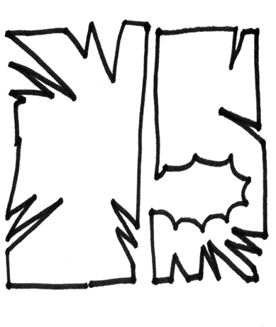
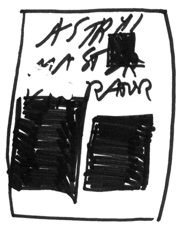
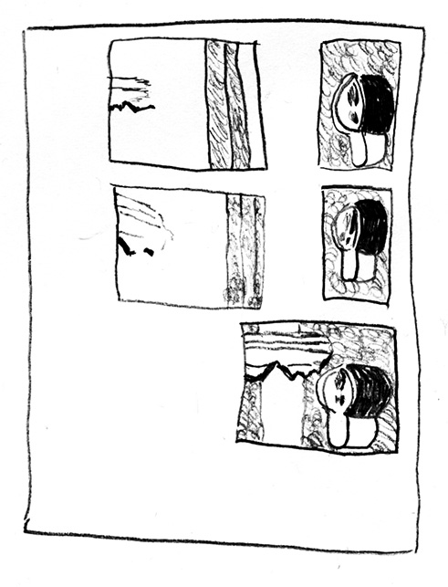
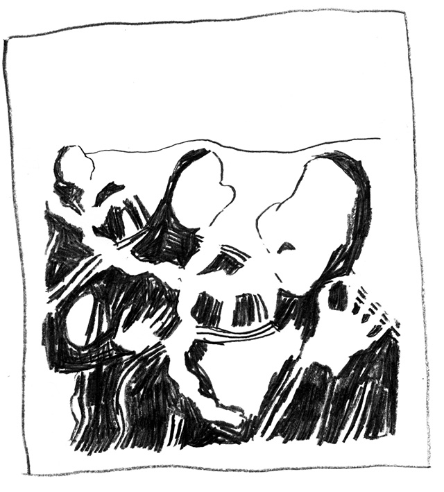

Dimitri Broquard – sélection
Bruxelles, Belgique
Artiste et cofondateur, avec Sébastien Aubry, du bureau de graphisme FLAG
Liste non-exhaustive et non-ordonnée de livres en lien (plus ou moins direct) avec la bd que je trouve intéressants.
To Be Continued,, Christian Marclay, Klangspuren Schwaz Tirol, Austria, 2016
Astral Master Vibrator, Xavier Robel, Miami Books, 2016
Claires Fontaines, Antoine Orand, Animal Press, 2018
Dear Jeff Mangum, Camille Potte, auto-édité, 2017
Yuichi Yokoyama, Adrien Parlange et Stefanie Leinhos pour toutes leurs œuvres!
Hors sélection (date de parution, langue etc)
Once Upon A Shine, Andreas Dobler, Hacienda Books, 2014
Edmonton Journal, Hans Rudolf Lutz, 1977
Welcome to Colorful, Claudia Comte, 2010
SPUK, Niklaus Rüegg, Édition Fink, 2005
B.J. & da Dogs, Paper Rad, PictureBox Inc, 2005
The Gorgeous Looping Papaye Bar, Dimitri Broquard, Nieves, 2013
Dreams, Jim Shaw, Ram Distribution, 2008
L’imagier des gens, Blexbolex, Albin Michel, 2008
Google raconte, Pierre Vanni, 2014
In the Crack of the Dawn, Matt Mullican & Lawrence Weiner, Mai 36 Galerie, Lucerne et Yves Gevaert, 1991
Skibber Bee Bye, Ron Regé Jr, Cornélius, 2012
La passion du speed, Super-Structure, 2014
The Abolition of Work, Bruno Borges, Oficina Arara, 2014
Bonsai, Volker Pfüller, Lubok Verlag,2012
L’immeuble,Louis Chalumeau
2003, 20 Minuten , Dimitri Broquard
Jon Vaughn
Paul Noble
Marcel van Eeden